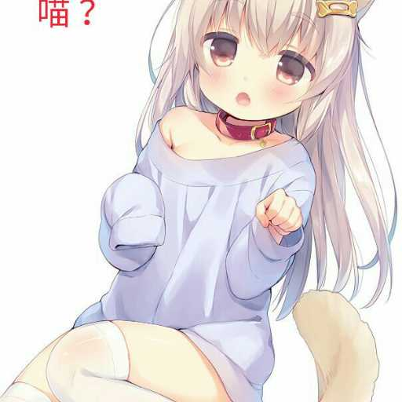
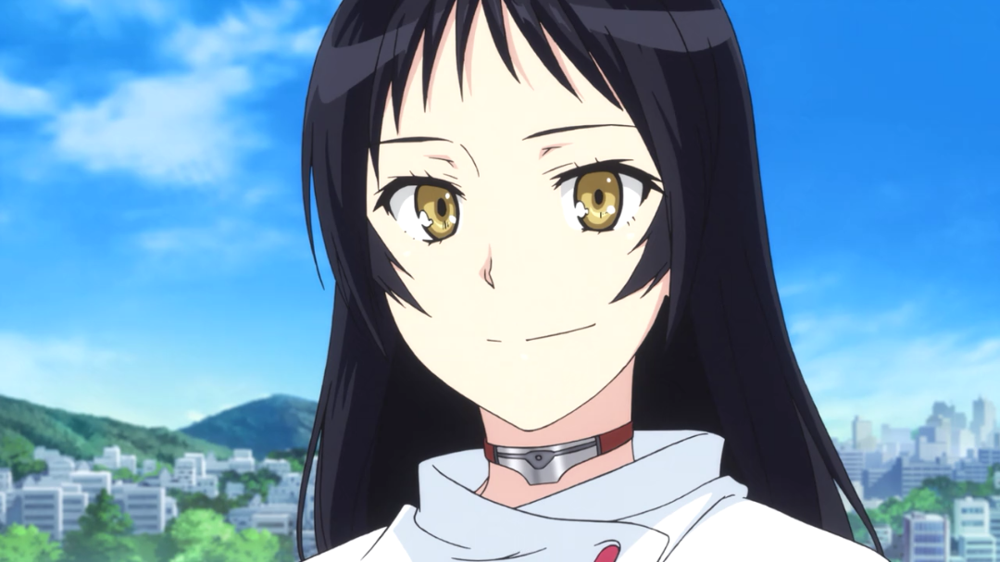

名字:
噙梅弄雪
性别:女

介绍:
问题
答案
新建于:2015-08-05 10:07:22 PM，更新于2016-06-26 07:41:51 AM
Pre上一页
Next下一页
跳页:
正文: 不请自来，其实我觉得大家讨论的并不是一个问题，题主想问的是“如何看待”而我们却执着于要看黄段子如何如何不好，cos这个角色多么低俗。
然而我并不这么觉得
首先，cos在我看来是一个普通的爱好而已，不同于那些所谓装逼炒作（绝对有人这么看的吧绝对的吧？_(:з」∠)_）
仅仅爱好而已，而黄段子也仅仅只是一部番罢了，那些想要靠这个炒作或者靠卖肉为生的人，不是很希望出这部番？然而我们和她们的确是不同的，我抱着一个旁观者的心态去看，然后发现那些穿得极少的，并不是在cos什么sox教，cos不是没有卖肉的，但在中国这个社会环境下，大部分都会觉得cos冰清玉洁吧？
老实说我并不觉得cos这部番有什么不好，说它低俗么？其实连一个不好的镜头都没有，仅仅是语言上的暗示，大家也就是看看笑笑便罢了，cos虽然全凭自己爱好，卖肉也有之，但是只是cos，我并不觉得和黄段子这部番有什么关系。
你们看番了么？！你们看番了么？！你们看番了么？！
不看番凭什么发表黄段子不健康反社会？而且那些只看表面的人，黄段子说的是反抗那些打着健全的名义而压迫甚至让整个社会陷入畸形的性的人，是宣扬了健康性思想的番，你们的辫子该剃了好么？！！
最后说一句，cos我大sox教并没什么不对，只是别过分，至少别游街？毕竟只是小团体活动，还是要社会认同的嘛~内裤什么的，在会场戴戴就可以了，粗来要呼吸新鲜空气哟~(´･ω･`)
以及我大sox教万岁，永远教徒一枚(*/ω＼*)
就这样~
Pre上一页
Next下一页
跳页: